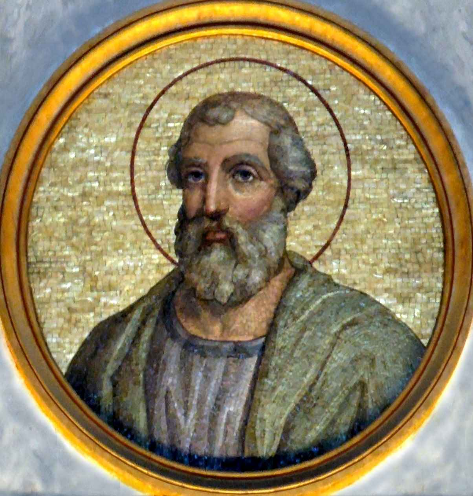

St. Linus
All the ancient lists of the bishops of Rome give the name of St. Linus as the immediate successor of Peter. According to Irenaeus also, who wrote in the second century, Linus (c. 67-c. 79) was chosen to be head of the Christian community in Rome after Peter's death. It is asserted, but not proved, that he was buried beside St. Peter in the cemetery on the Vatican Hill. Details of his pontificate are unknown.
McSorley, Joseph. An Outline History of the Church by Centuries (from St. Peter to Pius XII). 2nd Ed. 1944.